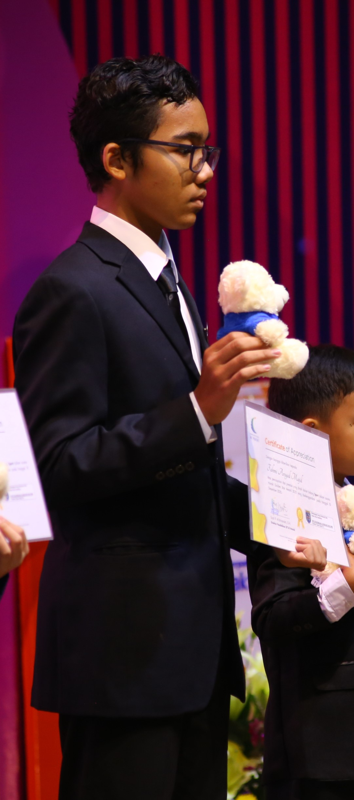
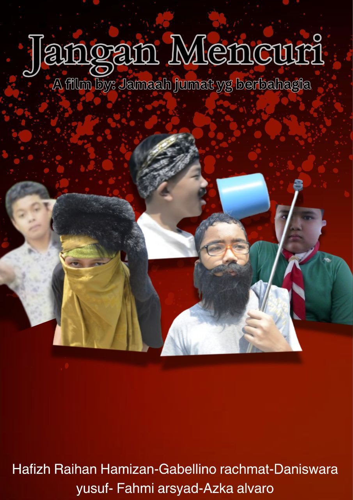
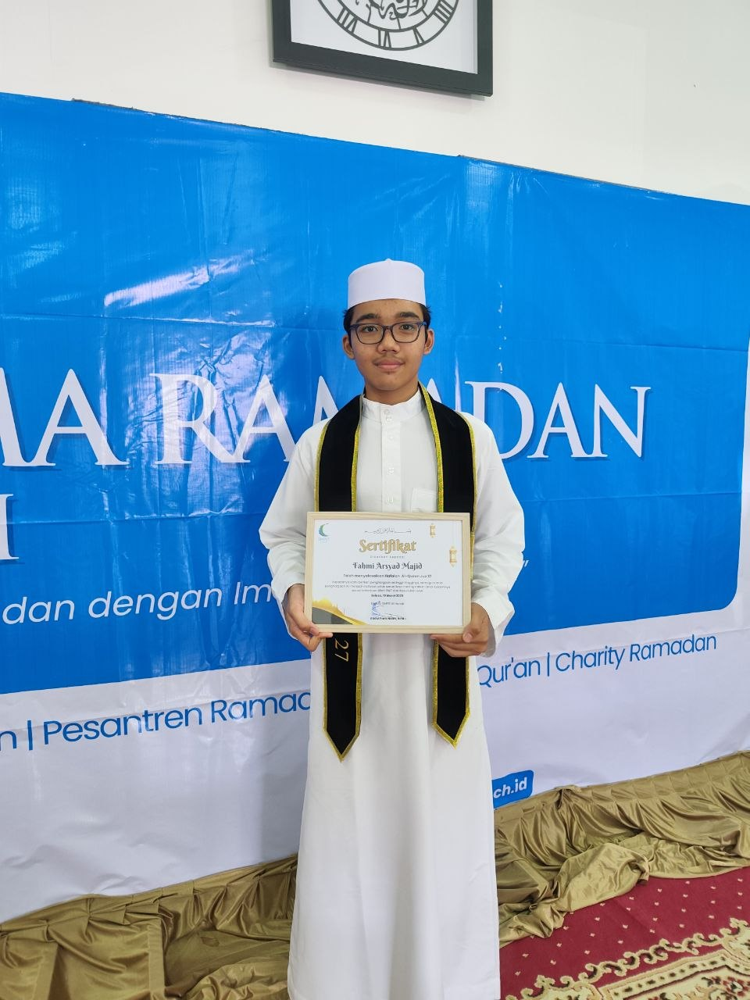
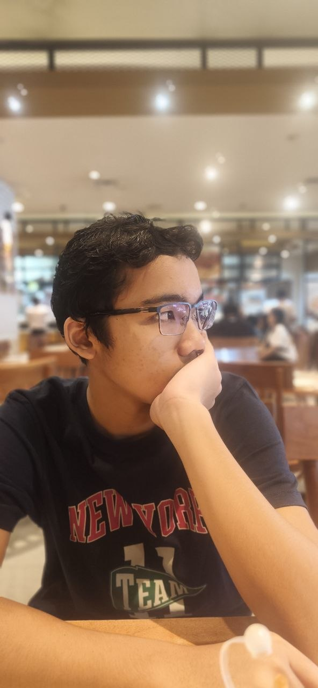

Karya Nyata dari Proses Belajar
Website ini adalah media pendukung untuk menampilkan hasil Ujian Praktik Terintegrasi. Konten utama di website ini adalah video broadcasting pembelajaran yang berisi penyampaian teks argumentasi secara lisan.
Website ini merupakan website portofolio digital yang berisi hasil karya dan pembelajaran saya selama mengikuti Ujian Praktik Terintegrasi.
Tujuan pembuatan website ini adalah untuk menampilkan karya yang telah saya buat serta melatih kemampuan saya dalam membuat website sederhana menggunakan HTML.
Topik dari video adalah sejarah pastry bidang kuliner hingga masuk ke Nisvara Bakery. Alasan saya memilih topik tsb karena saya ingin memberikan manfaat serta pengalaman saya ketika berkegiatan di IC.
Penonton dapat mengetahui awal mula dari pembuatan pastry, hingga masuk ke dunia kerja. Salah satunya di Nisvara Bakery.
Banyak sekali hal-hal yang sudah saya pelajari ketika di level 9 ini, seperti lebih menghargai waktu karena waktu bisa digunakan untuk melakukan hal yang bermanfaat seperti untuk belajar. Saya merasa level 9 angkatan ini adalah angkatan yang paling seru dan solid. Saya merasa sangat senang bisa ada di angkatan Goldstern ini. Mungkin dari saya, untuk semua teman-teman saya tetap semangat dalam mencari SMA yang diinginkan.



